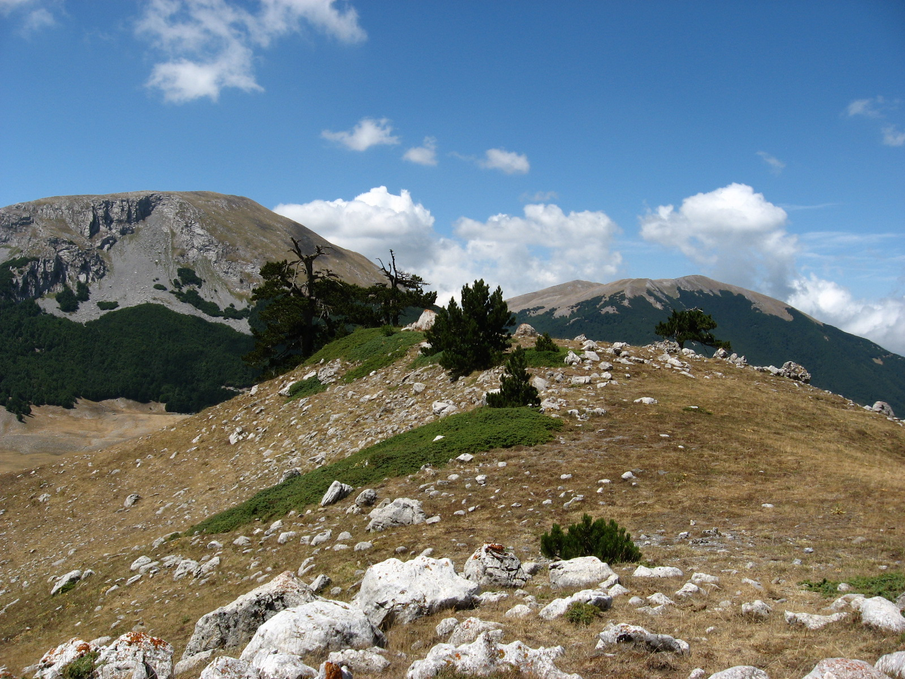
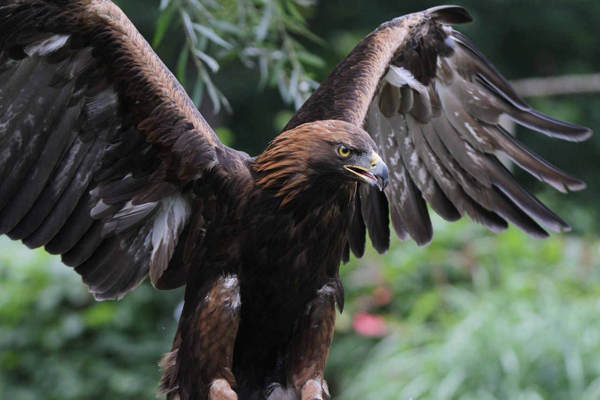
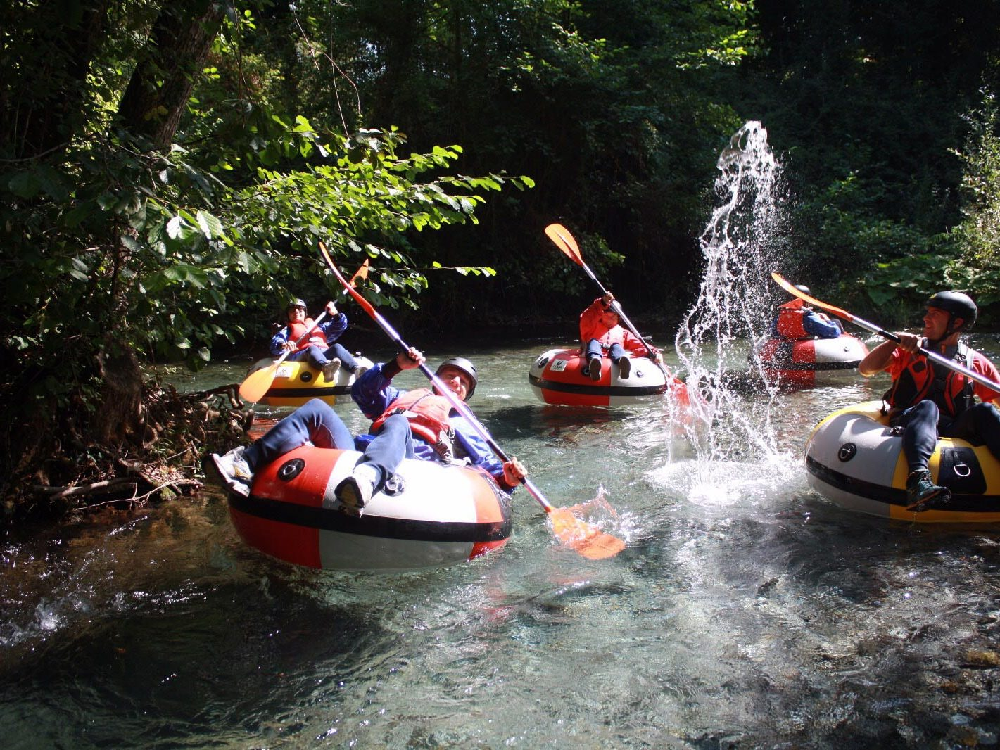
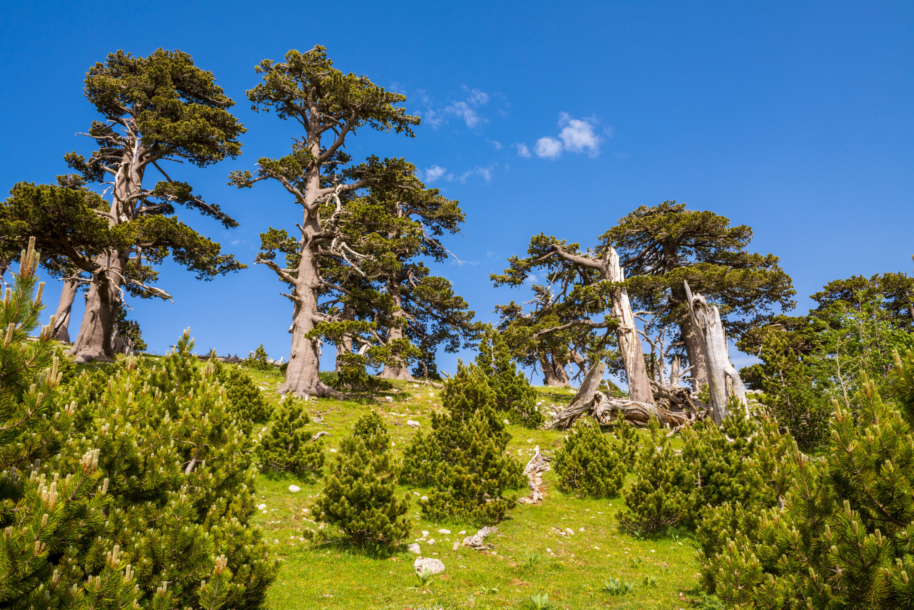
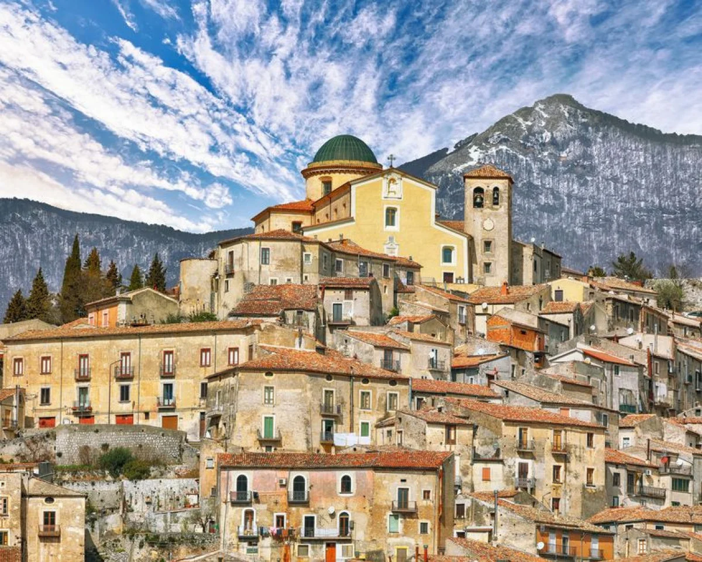
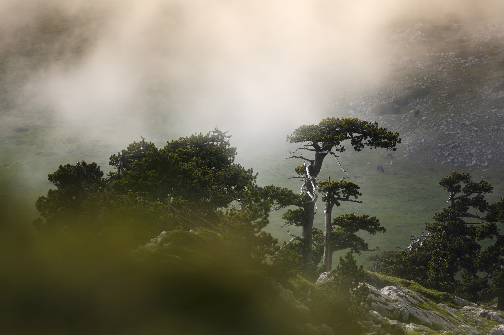

Un’area montuosa tra Basilicata e Calabria, con pini loricati, gole profonde e panorami mozzafiato.
Il Parco Nazionale del Pollino, istituito nel 1993, è il parco nazionale più grande d’Italia, con una superficie di circa 192.000 ettari. Situato tra la Basilicata e la Calabria, il parco prende il nome dal Massiccio del Pollino, una catena montuosa che raggiunge la sua massima altezza con il Monte Serra Dolcedorme (2.267 metri). Questo parco, caratterizzato da una natura selvaggia e incontaminata, è un autentico scrigno di biodiversità, paesaggi mozzafiato e tradizioni culturali radicate.
Le montagne del Parco Nazionale del Pollino offrono una straordinaria varietà di paesaggi, dai pendii scoscesi e ricoperti di boschi secolari, fino alle cime rocciose che dominano il panorama. Il Monte Pollino, il Monte Serra Dolcedorme e il Monte Alpi sono tra le vette più imponenti del parco e attirano escursionisti da tutto il mondo.
Il Parco Nazionale del Pollino ospita una ricca biodiversità, rendendolo una delle aree naturali più preziose d’Italia. Tra i mammiferi, si possono trovare il lupo appenninico, simbolo del parco, e il cinghiale. Cervi e caprioli sono altre presenze comuni, mentre nelle zone più alte si avvistano aquile reali e poiane.
Il Parco Nazionale del Pollino è una destinazione ideale per gli amanti della natura e degli sport all’aria aperta. Con oltre 200 chilometri di sentieri segnalati, il parco offre opportunità per escursioni di ogni livello. Tra i percorsi più noti c’è il sentiero che conduce alla Piana di Pollino e quello verso la vetta del Monte Serra Dolcedorme, che regala panorami indimenticabili.
Le Gole del Raganello sono una meta imperdibile per chi ama l’avventura. Qui, gli appassionati di canyoning possono esplorare cascate e piscine naturali, mentre altri visitatori preferiscono tranquille passeggiate lungo i sentieri circostanti.
Uno degli elementi più iconici del Parco del Pollino è il pino loricato, un albero raro e maestoso che cresce sulle rocce più alte e inaccessibili. Questo albero, simbolo del parco, è in grado di resistere a condizioni climatiche estreme.
La flora del parco è altrettanto ricca e variegata. Le foreste di faggi, querce e aceri si alternano a prati alpini ricchi di fiori selvatici, come orchidee rare e gigli.
Oltre alla bellezza naturale, il Parco Nazionale del Pollino è anche una terra ricca di storia e cultura. I borghi come Civita, Morano Calabro e Rotonda conservano un patrimonio architettonico e artistico unico.
La presenza della comunità arbëreshë, discendente dagli albanesi che si stabilirono nell’area nel XV secolo, aggiunge un ulteriore fascino culturale al parco.
Il Parco Nazionale del Pollino è un esempio virtuoso di gestione sostenibile e conservazione della biodiversità. Le attività umane, come il pascolo e l’agricoltura, sono regolamentate per ridurre l’impatto sull’ambiente e preservare gli ecosistemi.
Il parco è facilmente accessibile da diverse località sia in Basilicata che in Calabria. I centri visita di Rotonda e Civita offrono informazioni dettagliate su sentieri, attività e attrazioni.
La primavera e l’autunno sono i periodi migliori per esplorare il parco, grazie al clima mite e ai colori straordinari della natura. Tuttavia, ogni stagione offre esperienze uniche, dalle escursioni estive alle avventure invernali.
Con i suoi paesaggi incontaminati, le tradizioni culturali e la straordinaria biodiversità, il Parco Nazionale del Pollino è una destinazione che incanta chiunque lo visiti. È un luogo dove la natura e la storia si incontrano, creando un’esperienza indimenticabile per gli amanti dell’ambiente e della scoperta.